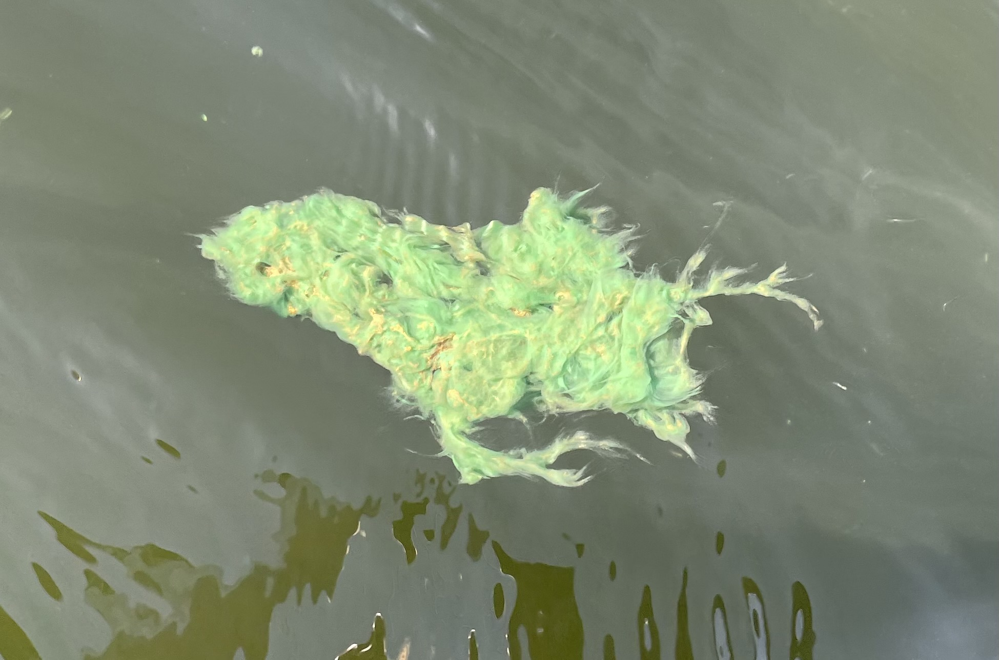
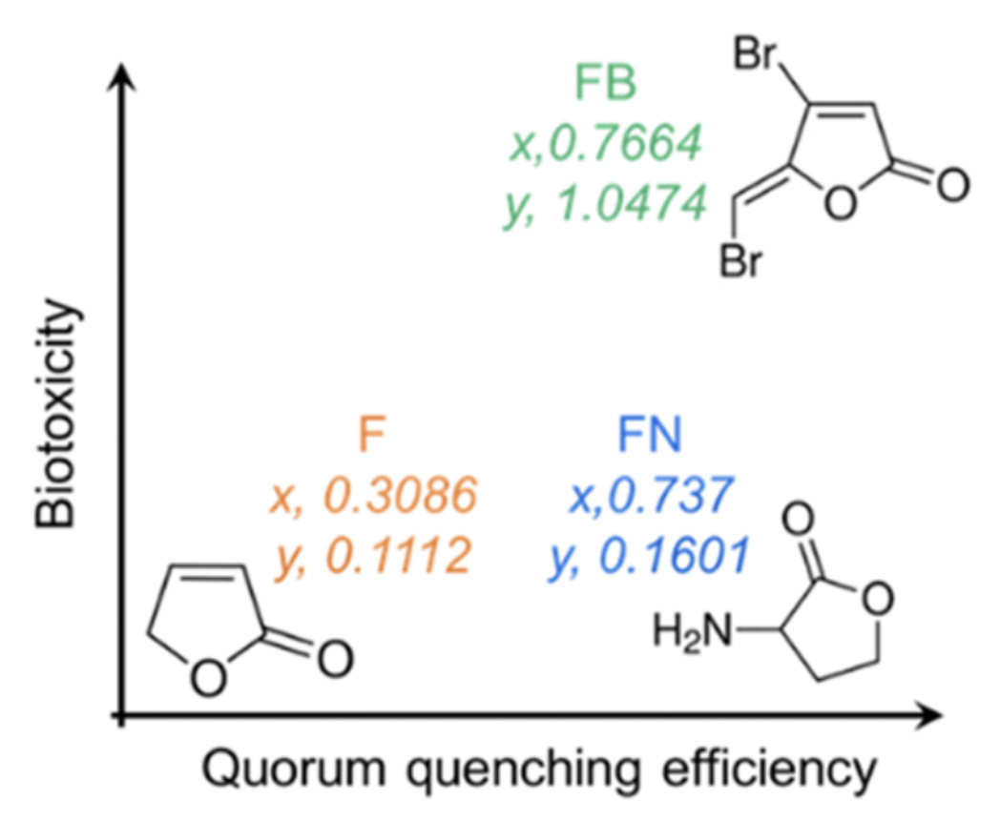

In freshwater and marine ecosystems, cyanobacteria blooms are common in warmer months and can cause serious threats to human and environmental health. What causes these blooms? How can we detect them? What about preventing them?
 A harmful cyanobacteria (algal) bloom, also known as cHAB, is the extensive growth of cyanobacteria in aquatic environments as a result of high nutrient inputs and excess warmth and sunlight. This growth manifests as dense mats either on the water's surface or at the bottom of lakes. Blooms are often visible from the surface and can present in a variety of colors. In freshwater systems, the blooms are green or blue. In marine systems, the blooms are red (also referred to as Red Tide) (Wood et al., 2016).
Under these productive conditions, cyanobacteria can produce a wide range of toxic secondary metabolites, referred to as cyanotoxins. A wide variety of toxins exist that are produced by various taxa. Hence, these toxic compounds can fall under many categories, such as alkaloids, lipidic compounds, or peptides. Though not well understood, it is believed that cyanobacteria produce toxins for a competitive advantage or cellular defense in response to competition from grazing or resource scarcity (Dittman et al., 2013).
This picture is a chuck of a bloom on Great East Lake in New Hampshire.
Unfortunately, exposure to cHABs can be fairly common in the summer months. Humans can be exposed to cyanotoxins by recreating on blooming lakes, whether that be direct skin contact with the water, ingestion of the water, or inhalation of aerosolized toxins. Given the toxic nature of cHABs, there is a significant human health concern associated with exposure to blooms. A wide variety of cyanotoxins can be produced by blooms, including hepatotoxins, neurotoxins, cytotoxins, dermatoxins, and irritant toxins. Acute (short-term) exposure to cyanotoxins can result in skin/eye irritation, sore throat, nausea and vomiting, diarrhea, fever, and abdominal pain. Symptoms usually resolve within a few days after acute exposure. Chronic (long-term) exposure to cyanotoxins is much more serious. Since cyanotoxins can take the form of hepatotoxins and neurotoxins, chronic exposure can lead to liver toxicity and neurodegenerative diseases such as ALS and Alzheimer's (Wood et al., 2016).
In New Hampshire, a cluster of ALS cases surrounding Lake Mascoma was attributed to the occurrence of blooms on that lake (Caller et al., 2009). Researchers identified 9 ALS patients living near the lake, an incidence of ALS that is ~25 times higher than the expected rate. Chronic exposure to the neurotoxin BMAA through contact with blooms or aerosolization of the toxin is suspected to be the cause based on toxin assessment in lake water and ALS incidence. Future studies could analyze brain tissue for the presence of cyanotoxins to support Caller et al.'s findings.
The strains and population structure of cyanobacteria present in a bloom can alter its dynamics. Sogge et al., 2013, studied a bloom-forming genus called Planktothrix in Norwegian lakes to understand how bloom populations vary across lakes. By analyzing NRPS genes as markers for toxin-production, the researchers found that the different lakes contained a similar structure of Planktothrix variants. They also found low genetic diversity within variants compared to between-variants, verifying the distinctness of the variants. The gene analysis also revealed that new variants resulted from recombination events between Planktothrix variants (Stogge et al., 2013). From studies like this one, we see the influence of microbial evolution, gene flow, and dispersal mechanisms on microbial population such as cyanobacteria blooms.
Quorum sensing is predicted to play an important role in cyanobacteria bloom formation. Blooms are formed when cyanobacteria rapidly grow and aggregate into a surface mat similar to a biofilm. It is predicted that AHLs (acyl-homoserines lactone), signaling molecules that are potentially present in cyanobacteria environments, allow cyanobacterial cells to communicate with each other and form blooms as well as regulate cell growth, metabolism, and other "group behaviors." Some microbes can produce metabolites that block binding sites and prevent quorum sensing from occurring to better compete with other microbes. Hence, a possible way to mitigate blooms is by utilizing artificially produced quenching quorum signaling molecules, proposed by Yan et al., 2023. The study analyzed a signaling molecule in Microcystis, a bloom-forming genus, to determine its ability to prevent the aggregation of Microcystis cells in a toxic bloom. Upon implementation of the signaling molecule FN, Microcystis growth was inhibited and programmed cellular death was even induced. Further analysis concluded that this molecule was successfully blocking the quorum sensing receptor protein. The utilization of FN, which is nontoxic and naturally occurring, could provide a solution to toxic cyanobacteria blooms (Yan et al., 2023). This figure from Yan et al., 2023, shows the 3 quorum sensing inhibitors tested in this study. In blue, FN proves to be the most effective and also least toxic molecule, proving to be a potential bloom solution.
To prevent toxic cyanobacteria blooms from inflicting human harm, the prediction of blooms is something that should be implemented in water quality monitoring programs. Typically, visual identification of blooms (microscopy) and toxic analyses (ELISA) are used to determine risks to safety. However, it may be beneficial to implement molecular analyses to detect the presence of toxic cyanobacteria. DNA detection methods are often more specific, more sensitive, and faster (Ouellette and Wilhelm, 2003). For example, targeting toxin biosynthesis genes, such as mcy genes for microcystins in Microcystis and Planktothrix, can provide insight regarding the potential presence or absence of a microcystin-producing cyanobacterium in any given sample (Nishizawa er al., 1999; Tillett et al., 2000; Nishizawa et al., 2000; Christiansen et al., 2003). Although not all cyanobacteria produce toxins, it’s important that any detection of a toxin gene be treated as a potential threat.
Although toxic cyanobacteria blooms are dangerous and inconvenient, there are many potential methods for mitigating their occurrence. The reduction of excess nitrogen and phosphorus inputs into waterways would prevent the excessive cyanobacterial growth that leads to toxic blooms. Increased flushing, enhanced mixing, and ultrasonic waves would create shorter water residence times, preventing too much cyanobacterial growth in one location. Manipulating food web dynamics would allow filtering and consumption of cHABs (although this may pose a trophic risk). Nutrient removal would stabilize the nutrient availability to cyanobacteria, preventing their overgrowth. Chemical treatments could kill cyanobacterial growth. Submerged aquatic plants could be implemented to aid in nutrient removal. Finally, bottom sediments could be removed to reduce internal nutrient loading (Paerl et al., 2016). These mitigation methods can be utilized individually or together, but treatments for individual lakes may vary depending on specific needs. Image from Paerl et al., 2016.
Caller, T. A., Doolin, J. W., Haney, J. F., Murby, A. J., West, K. G., Farrar, H. E., Ball, A., Harris, B. T., & Stommel, E. W. (2009). A cluster of amyotrophic lateral sclerosis in New Hampshire: A possible role for toxic cyanobacteria blooms. Amyotrophic Lateral Sclerosis, 10(sup2), 101–108.
Christiansen, G., Fastner, J., Erhard, M., Börner, T., & Dittmann, E. (2003). Microcystin Biosynthesis in Planktothrix: Genes, Evolution, and Manipulation. Journal of Bacteriology, 185(2), 564–572.
Dittmann, E., Fewer, D. P., & Neilan, B. A. (2013). Cyanobacterial toxins: Biosynthetic routes and evolutionary roots. FEMS Microbiology Reviews, 37(1), 23–43.
Nishizawa, T., Asayama, M., Fujii, K., Harada, K., & Shirai, M. (1999). Genetic Analysis of the Peptide Synthetase Genes for a Cyclic Heptapeptide Microcystin in Microcystis spp. The Journal of Biochemistry, 126(3), 520–529.
Nishizawa, T., Ueda, A., Asayama, M., Fujii, K., Harada, K., Ochi, K., & Shirai, M. (2000). Polyketide Synthase Gene Coupled to the Peptide Synthetase Module Involved in the Biosynthesis of the Cyclic Heptapeptide Microcystin1. The Journal of Biochemistry, 127(5), 779–789.
Ouellette, A. J., & Wilhelm, S. W. (2003). Toxic cyanobacteria: The evolving molecular toolbox. Frontiers in Ecology and the Environment, 1(7), 359–366.
Paerl, H. W., Gardner, W. S., Havens, K. E., Joyner, A. R., McCarthy, M. J., Newell, S. E., Qin, B., & Scott, J. T. (2016). Mitigating cyanobacterial harmful algal blooms in aquatic ecosystems impacted by climate change and anthropogenic nutrients. Harmful Algae, 54, 213–222.
Sogge, H., Rohrlack, T., Rounge, T. B., Sønstebø, J. H., Tooming-Klunderud, A., Kristensen, T., & Jakobsen, K. S. (2013). Gene Flow, Recombination, and Selection in Cyanobacteria: Population Structure of Geographically Related Planktothrix Freshwater Strains. Applied and Environmental Microbiology, 79(2), 508–515.
Tillett, D., Dittmann, E., Erhard, M., Von Döhren, H., Börner, T., & Neilan, B. A. (2000). Structural organization of microcystin biosynthesis in Microcystis aeruginosa PCC7806: An integrated peptide–polyketide synthetase system. Chemistry & Biology, 7(10), 753–764.
Wood, R. (2016). Acute animal and human poisonings from cyanotoxin exposure—A review of the literature. Environment International, 91, 276–282.
Yan, G., Fu, L., Ming, H., Chen, C., & Zhou, D. (2023). Exploring an Efficient and Eco-Friendly Signaling Molecule and Its Quorum Quenching Ability for Controlling Microcystis Blooms. Environmental Science & Technology, 57(44), 16929–16939.